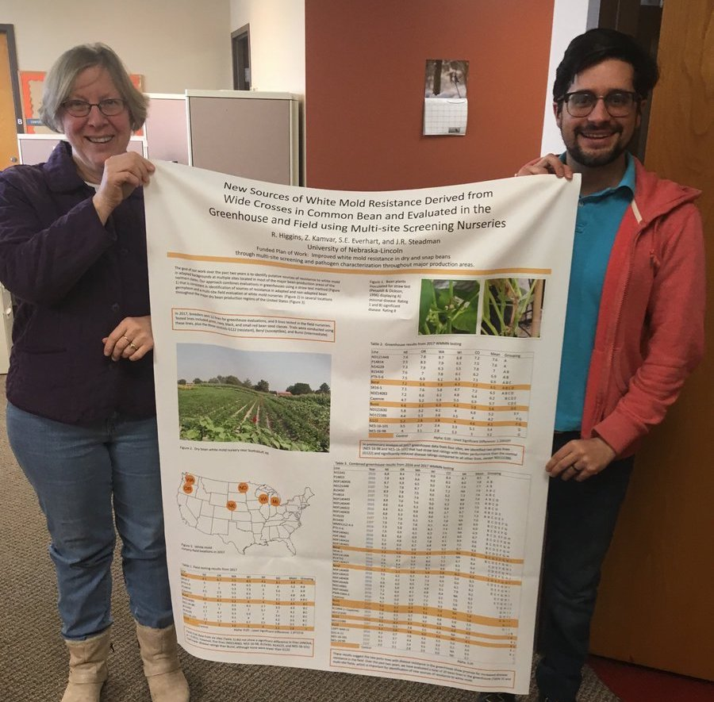
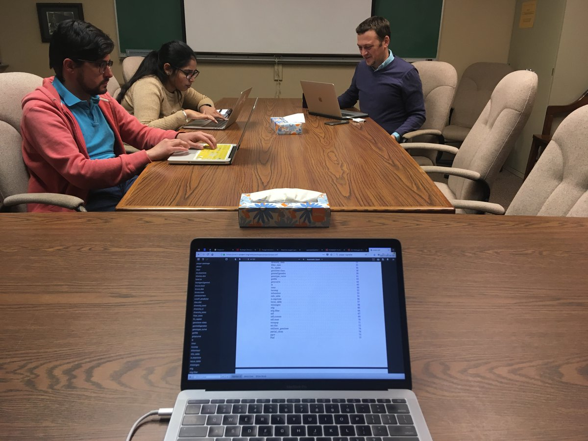
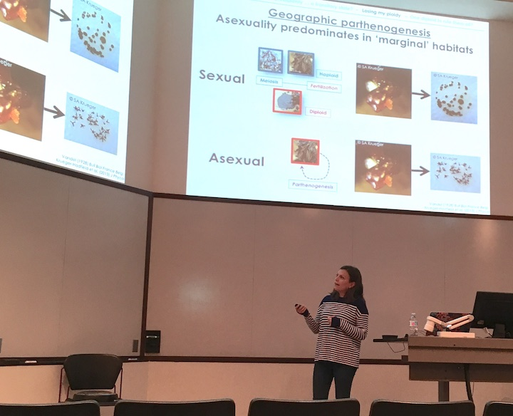

In the Everhart Lab…
In my lab, we characterize population dynamics and spread of fungal plant pathogens using quantitative spatiotemporal epidemiology, population genetics, and whole-genome approaches. We also study how pathogens evolve under stress and how this is related to emergence of fungicide resistance.
News from the Lab
News from 2020
October 2020
- Congratulations to Nikita who has successfully passed her dissertation defense! After graduation she will be starting a postdoc position with Dr. Katie Gold at Cornell University to further expand her skills to spectral data analysis to detect fungicide resistance within vineyards. Exciting developments on both fronts!
August 2020
The American Phytopathological Society’s annual meeting “Plant Health 2020” is virtual this month, with several lab members presenting their research. Here is a list of their presentations:
Fungicide resistance: Screening and risk-assessment of Rhizoctonia zeae populations in Nebraska Nikita Gambhir, Srikanth Kodati, Anthony Oyegoke Adesemoye and Sydney E. Everhart. Live presentation as part of 19th I.E. Melhus Symposium on Data Driven Plant Health: Friday, August 14, 2020, at 9:00am.
Rapid detection of QoI fungicide resistance in Cercospora sojina and characterization of populations in Nebraska Asha Mane, Tamra A. Jackson-Ziems, Carl A. Bradley, and Sydney E. Everhart. Technical session on Diagnostic Marker Development with live Q&A on: Thursday, August 13, 2020, 11:15am.
Fungicide Sensitivity of Sclerotinia sclerotiorum from Dry Bean and Soybean in the U.S Edgar Humberto Nieto-Lopez, Thomas J.J. Miorini, Martin Chilvers, Loren J. Giesler, Tamra A. Jackson-Ziems, Mehdi Kabbage, Daren S. Mueller, Damon L. Smith, Juan Manuel Tovar-Pedraza, Jaime F. Willbur and Sydney E. Everhart. Poster presentation.
An outbreak of bud blight disease of spruce (Picea spp.) in Alaska: an epidemiological study of Gemmamyces piceae Sergio Manuel Gabriel Peralta, Gerard C. Adams Jr., Loretta Winton, Karel Cerny and Sydney E. Everhart. Poster presentation.
Distribution and population structure of Rhizoctonia zeae in the North Central United States. Nikita Gambhir, Srikanth Kodati, Anthony Oyegoke Adesemoye, Olutoyosi O. Ajayi, Kaitlyn Bissonnette, Carl A. Bradley, Martin Chilvers, Ahmad M. Fakhoury, Tamra A. Jackson-Ziems, Leonor F. S. Leandro, Christopher R. Little1, Dean K. Malvick1, Febina M. Mathew1, Berlin D. Nelson Jr., Gretchen Sassenrath, Damon L. Smith, Darcy E. P. Telenko, Kiersten A. Wise and Sydney E. Everhart. Poster presentation.
July 2020
Congratulations to Asha for the successful funding of the proposal she co-authored to the Nebraska Soybean Board entitled “Survey and rapid diagnostics for fungicide resistant Frogeye Leaf Spot in Nebraska.”
Our new project proposal to the USDA National Sclerotinia Initiative was also awarded funding, which supports the project that Becky is working on to coordinate our multi-state bean line screening research and Edgar’s research on Sclerotinia sclerotiorum fungicide resistance and population structure.
At the end of this month, we also bid farewell and good luck to Cristian as he leaves to begin his Ph.D. in California.
May 2020
- There were two graduations to celebrate this month, Cristian has graduated with his B.S. in biochemistry and Karen has received her doctorate in Agronomy & Horticulture. Congratulations to both of you! You both showed incredible resilliency to change by finishing your programs on time despite the uncertainty of the pandemic. While Karen has already left for her new position, we are fortunate to keep Cristian for another couple of months before he too departs for California, where he will be joining the Department of Molecular Medicine at the Scripps Research Institute.
April 2020
Dr. Karen Ferreira DaSilva has successfully defended her dissertation this month! This is a major milestone and although the pandemic has limited our ability to celebrate in person, we are all super excited for her achievement and looking forward to celebrating this in person sometime in the future. Congratulations, Karen!
Cristian has completed his UCARE research project and although we could not see him present the poster in person at the UNL Spring Research Fair, he was able to upload the poter onto UNL Digital Commons. His poster is titled, “Fungicides sensitivity of Sclerotinia sclerotiorum isolates from five states with different fungicide treatments.”
March 2020
- Great news! Karen has just accepted a job offer to work as a Plant Pathology Field Scientist for Corteva Agrisciences in Davis, CA. Now the dissertation just has to be finished and defended – no pressure!
February 2020
- Incredibly, more than 150 people registered to attend each day of our 2-day Intro to R Workshop that is being broadcast via APS as a webinar this month. This is the very first time that a computational workshop is going to be offered as an APS webinar. Hopefully this will encourage others to take a leap and offer their computing workshop as a webinar too.
January 2020
- Dr. Srikanth Kodati, former Ph.D. student in the lab accepted a new position as a postdoc researcher in the lab of Dr. James LaMondia in the Valley Laboratory in Windsor, CT. The ressearch that he will be conducting is on horticultural and specialty crops important on the east coast and build upon Sri’s M.S. research experience in Tennessee working on dogwood varieties with resistance to powdery mildews. Congratulations, Dr. Kodati!
News from 2019
December 2019
- Congratulations to Dr. Srikanth Kodati, who successfully defended his Ph.D. dissertation this fall, entitled “Diversity and pathogenicity of Rhizoctonia spp. from different plant hosts in Nebraska”. It has been such a wonderful year working with you on these projects.
July 2019
- Congratulations to Ms. Gulcin Ercan on successfully defending her M.S. thesis co-advised with Dr. Julie Peterson in the Department of Entomology. Wishing you all the best, Gulcin, on the next phase of your career.
August 2019
After 5 years at the University of Nebraska, I will be starting this fall semester as an associate professor in the Department of Plant Pathology. Special thanks is due to all of the people who I have worked with over the years, this is a huge milestone and I appreciate all of the people who I have collaborated with and interacted along the way.
Several of the Everhart Lab members traveled to the APS Meeting in Cleveland, OH to present our research. Karen was selected to present two talks, including one in the I.E. Melhus Symposium. Margarita presented two posters. Nikita presented two posters and co-taught our Intro R workshop. Srikanth presented a poster of his research. Thomas presented a poster of previous work in my lab and even Edgar had a poster at the meeting. In general, we made our visit to Ohio very productive, forming new relationships, extending our networks, and identifying future potential collaborations.
- Congratulations to Karen! She received the third place oral presentation from the North Central Division of APS and was the only student from our department selected for the NC-APS travel award. Way to go!
A big welcome to new Everhart Lab member, Sergio Gabriel-Peralta! Sergio received his bachelor’s in Mexico and his master’s at UNL studying plant viruses. He joins the lab after having been awarded a prestigious CONNACYT fellowship from the Mexican government. Welcome, Sergio!
July 2019
Congratulations, Julianne, for successfully defending your dissertation! I heard lots of great comments about the quality of your presentation.
Julianne was awarded the Corteva Award to attend the Society of Nematology (SON) Meeting in Raleigh, NC this month. She gave an oral presentation of her research on nematodes in the Great Smoky Mountains National Park and presented a poster of her work on deciphering ecological features within cryptic species, Mesocriconema xenoplax.
The beginning of this month was the conclusion of a summer course that I taught on professional development called Success in the Sciences. This has become a highly rated course and so I will be teaching it again this fall.
In other news, Asha Mane is joiing the Everhart Lab this month. Asha received her bachelor’s and master’s in India and is interested in cutting-edge research in plant pathology. She also comes to us after having several years of lab experience. We will be working together this fall to develop her project plans. Welcome, Asha!
June 2019
- I traveled with Complex Biosystems students, Kimberly Stanke and Ashley Stengel, to Idaho to present a poster and for them to give talks at the North American Colleges and Teachers of Agriculture meeting in Twin Falls, ID. Congratulations on two very excellent presentations on pedagogy!
April 2019
- We have two new people joining the Everhart Lab this month, Srikanth Kodati and Gulcin Ercan. Both students previously worked with Dr. Tony Adesemoye who left UNL for an industry position this month. Srikanth will move to Lincoln later this spring and Gulcin will finish her master’s in North Platte, under direct supervision of her co-advisor, Dr. Julie Peterson. Welcome, Sri and Gulcin!
March 2019
- The Everhart Lab hosted Dr. Lucky Mehra, epidemiologist and instructor from Kansas State University to give a seminar and co-teach the Intro to R workshop during the spring break to more than 60 students, staff, and faculty.
Nikita and I traveled to Knoxville, TN to the University of Tennessee for a joint collaborative visit with Drs. Denita Hadziabdic and Meg Staton. We kicked off a week-long visit by teaching our Intro R workshop and then later, Nikita worked with the Staton lab to learn de novo genome assembly and I worked one-on-one in a data analysis project with Denita.
Good news! I returned from Tennessee to find out that my application for tenure and promotion were officially approved at all of the levels from the department to the Vice Chancellor. When my appointment starts in the fall, it will be as Associate Professor.
February 2019
- The UNL Teaching and Learning Symposium was held this month at the Nebraska Innovation Campus. As part of the event, I co-taught a workshop on active learning techniques that were used in my professional development course. The great thing was that I got to co-teach this with two graduate students who co-developed the course, Kimberly Stanke and Ashley Stengel. I think we did a great job and had fun!
January 2019
Biochemistry undergraduate, Cristian Wolkup-Gil, has joined our lab to gain research experience. He’s writing proposals for a UCARE project and an IANR Undergraduate Research Award to conduct a project on fungicide sensitivity of Sclerotinia sclerotiorum from dry bean fields in the U.S. = The project that I started as part of my USDA-NIFA Postdoctoral fellowship on Phytophthora ramorum was published in mBio this month.
As part of my application for tenure, I delivered a seminar in the Department of Plant Pathology this month that highlighted my research and its impact.
News from 2018
December 2018
Starting in the spring, Julianne Matcynszyn will join the Everhart Lab to complete her Ph.D., which is on the ecological differnatiation within Mesocriconema xenoplax cryptic species. She comes to our lab after four years in Dr. Tom Powers’ lab. Julianne is targeting August for completion of her dissertation. Welcome, Julianne!
This month, I finalized and submitted my application for early tenure consideraton in the Department of Plant Pathology. Since there is no third year review in our department and no penalty for going up a year early for tenure consideration, I considered this a “no brainer”. In the worst case scenario, this will allow me to gain feedback on what I need to do this year to make a winning application next year.
November 2018
- Invited by Dr. David Cook of the Department of Plant Pathology, I visited Kansas State University to give a seminar. This was a wonderful trip to a department with several new, vibrant faculty engaged in high-end research. It was a very special moment for me to be invited to give a seminar in the place where my dad, Dr. Eldon Everhart, earned his B.S. and M.S. in Horticulture working with Dr. Charlie Hall in the 1960’s.
October 2018
A new undergraduate student in biochemistry, Olivia Renelt, has joined the Everhart Lab to help out with our fungicide sensitivity assays and molecular genetics projects. Welcome, Olivia!
Invited by the graduate student association in the Department of Plant Pathology and Environmental Microbiology, I traveled to Penn State University to give a departmental seminar, Intro to R Workshop, and chat with the students about time management. It was a whirlwind trip that was amazing!
August 2018
Several of us took a trip to Boston for the combined meeting of the International Congress of Plant Pathology (ICPP) and the American Phytopathological Society, where one workshop, one talk, and several posters will be presented by members of our group.
Workshop: Intro to R for Plant Pathologists was co-taught with Nikita to >60 attendees
Talk: Nikita gave a presentation in a special session on fungicide resistance to a large audience
July 2018
- The 8-week summer semester teaching Success in the Sciences has finally come to an end and, after a week of recovery, Ashley, Kimberly, and I have decided that our work to develop this coures will be documented as a Benchmark Portfolio to be published on UNL Digital Commons, shared in Canvas to enable others to import the course, and we will analyze artifacts of our course in order to summarize the work for publication in a journal like North American College Teachers in Agriculture.
June 2018
- The Everhart Lab is headed to Fargo, ND this June to attend the APS North Central Division Meeting. Among abstracts submitted, Edgar’s was selected for one of only a very limited number of oral presentation slots. He will be presenting a talk entitled, “Fungicide sensitivity of 42 Sclerotinia sclerotiorum isolates in the North Central U.S. and determination of discriminatory concentrations.”

- Joining the Everhart Lab is Karen Ferreira Da Silva. Karen comes to us with research experience working in the labs of Drs. Gary Yuen and Josh Herr, and having received her M.S. in Entomology working with Dr. Blair Sigfreid. Projects that Karen will complete in my lab include a meta-analysis of gene expression data, a greenhouse study to evaluate interactions in the fall armyworm x Goss’s wild pathogen on disease development, and a survey of leadership training provided to and needed for students in Plant Pathology and the broader agricultural STEM careers. Welcome Karen!
May 2018
We are welcoming two new people to our lab this summer! Callie Braley and Rachel Persson.
Callie is a student in the Doctor of Plant Health program and will be spending time learning about how research on fungicide sensitivity is conducted in the lab. She will also begin a small survey of Nebraska to see if she finds any QoI-resistant isolates of the frogeye leaf spot pathogen Cercospora sojina.

Rachel is an undergraduate student in biochemistry and received funding from the UNL UCARE program to conduct a small study where she will be comparing genotyping results from Dr. Jim Steadman’s lab Sclerotinia sclerotiorum database to genotyping results in our lab in order to determine if genotyping results of the two can be compared and combined.
This summer I’ll be teaching a new course in professional development, entitled Success in the Sciences. The fun part is that this is a coures that I am co-developing wtih two graduate students in the Complex Biosystems program, Kimberley Stanke and Ashley Stengel, with additional guidance on curriculum development and active learning techniques from Dr. Sydney Brown.
April 2018
Both sad and exciting news that both Zhian and Thomas will be moving on to new postdoctoral positions this month
Zhian will be taking a new postdoctoral researh position in London with Dr. Theobart Jombart, the author of the adegenet R package. Although I am sad to see Zhian go, I am excited for him to gain this new experience!
Thomas is moving north to Carrington, ND to gain tons of field experience working with Michael Wunsch. They will be working together to evaluate fungicide applications for the control of Sclerotinia sclerotiorum diseases in multiple row crops.
March 2018
Wow! What a month! We submitted three manuscripts in two weeks to Tropical Plant Pathology for the special issue on Sclerotinia research. All of our submitted manuscripts are open and available for comment at PeerJ Preprints:
Pannullo, AP, ZN Kamvar, TJJ Miorini, JR Steadman, and SE Everhart. 2018. Genetic variation and structure of Sclerotinia sclerotiorum populations from soybean in Brazil. PeerJ Preprints
Miorini, TJJ, ZN Kamvar, R Higgins, CG Raetano, JR Steadman, and SE Everhart. 2018. Variation in pathogen aggression and cultivar performance against Sclerotinia sclerotiorum in soybean and dry bean from Brazil and the U.S. PeerJ Preprints
Kamvar, ZN, and SE Everhart. 2018. Something in the agar does not compute: On the discriminatory power of mycelial compatibility in Sclerotinia sclerotiorum. PeerJ Preprints

January 2018
Becky Higgins of Jim Steadman’s lab and Zhian (pictured right) have their poster ready for the National Sclerotinia Initiative meeting this Wednesday, January 17th in Minneapolis, MN.
- The Everhart Lab has created a new Computing Cafe in our department that is open daily on Tuesday to Friday from 3:30 to 5:00pm in the Department of Plant Pathology Conference room located in 406B Plant Sciences Hall. Examples of computing tools that will be used in the cafe include:
- Canvas

- Drupal 7 and 8 (UNL web framework) 
- GitHub
- R, RStudio, and various R packages
- HCC-related command-line work
- anything that exists on a computer
- Canvas
Collaborative paper with Dr. Amauri Bogo of Santa Catarina State University in Brazil on two species of Neofabraea causing apple bull’s-eye rot is is now in press and available as a pre-print online! https://doi.org/10.1080/07060661.2017.1421588
News from 2017
December 2017

Paper in PeerJ now published! Check it out. https://peerj.com/articles/4152/
We submitted a total of five abstracts for the APS-ICPP 2018 meeting, including recent work by Thomas to compare ability of different fungicides to protect flowers from infection by Sclerotinia sclerotiorum ascospores (pictured right).
I was nominated by Dr. Loren Giesler for the UNL Dinsdale Family Faculty Award for pre-tenure faculty with excellence in research, teaching, and/or extension. It was a great opportunity to get my photo taken with both Loren and our IANR Vice Chancellor and plant pathologist, Dr. Mike Boehm.
November 2017
Our population study of Sclerotinia sclerotiorum populations is now accepted for publication in PeerJ! Congratulations to Zhian and co-authors on this publication!
New undergraduate students, Audrey Vega and Isabel Chavez, are selected to join the Everhart Lab as new lab helpers. Welcome, Audrey and Isabel!
The USDA Women and Minorities in Agricultural STEM program will be funding a project that I co-developed with collaborators Jenny Keshwani, Leah Sandall, Julie Bray-Obermyer, and Deepak Keshwani, to create a mentoring program for youth to connect with career professionals who look like them. Our program is called Cultivate ACCESS and will be launched in the spring of 2018!
We hosted two visiting speakers this month:

- Dr. Jerry Weiland of the USDA-ARS Horticultural Crops Research Unit visited our department and gave a comprehensive talk on characterization of soilborne pathogens that affect tree production in the Pacific Northwest. This talk was highly praised by many in our department!

- Dr. Stacy Krueger-Hadfield from the University of Alabama at Birmingham visited and give us an exciting talk on the mysterious lives of marine algae. Belive it or not, plant pathogens and algae have a lot in common when it comes to population genetics! Complex mating systems == complex data. Great talk!
October 2017

Invited by Dr. Anne Dorrance, I taught our Intro to R for Plant Pathologists workshop to ~20 grad students and postdocs located in Wooster and video-linked to Columbus. The following day, I gave a seminar for the department and had a great time meeting students, faculty, and staff.
Our manuscript on the largest population genetic study of Sclerotinia sclerotiorum that were collected over a 10-year period is now out as a PeerJ Preprints and under review at PeerJ.
Jimin Kamvar has joined the Department of Plant Pathology to serve as a Digital Communications Liaison under my supervision. Her work will serve to keep the department website updated. Welcome, Jimin!
September 2017
I was invited by Dr. Mark Gleason to give a seminar at the Department of Plant Pathology and Microbiology at Iowa State University.
Nikita was selected to receive the 2017-2018 Widaman Distinguished Graduate Assistantship. Congratulations, Nikita!
August 2017

Invited by Drs. Eduardo Mizubuti and David Jaccoud Filho, I gave two presentations at the 16th International Sclerotinia Workshop in Uberlandia, Brazil. This also included a post-meeting field trip to see agricultural production in the region and my first visit to a coffee plantation (with rust!!).
Edgar, Zhian, Thomas, Nikita, and I are headed to the national APS meeting in San Antonio, TX. Check out our posters if you’re there.
Nikita received the Donald E. Munnecke Student Travel Award from APS to attend the national meeting. Well done!
July 2017
Farewell to Anthony as he departs the Everhart Lab to begin graduate studies in microbiology at the University of Iowa. Good luck, Anthony!
Welcome to Alex Johnson! Starting in July, Alex will be working in our lab half time as a research assistant.
June 2017

Edgar, Anthony, and, Nikita each received a travel award to attend the North Central APS meeting in Champaigne, IL. Congratulations on your excellent poster presentations!
Our Intro to R Workshop, co-taught with Dr. Alex Lipka of Univ. of Illinois at Urbana-Champaigne, was a big success at the 2017 North Central APS Meeting. We had more than 20 people coding in R.
Welcome to Dr. Margarita Marroquin-Guzman! Starting June 6th, Margarita will be working in our lab as a postdoctoral scholar on a project to characterize the soybean / covercrop microbiomes with different covercrop rotations. Welcome!

May 2017
- Intro to R Workshop co-developed and taught by myself and Zhian was delivered to a packed house of more than 50 people from UNL. Photo at right shows Zhian teaching a classroom of captivated graduate students, postdocs, and faculty in the Goodding Learning Center.
April 2017

Nikita wins award for her poster presented at the UNL Spring Research Fair – congratulations, Nikita!
Edgar, Nikita, and, Anthony presented posters at the UNL Spring 2017 Research Fair (Edgar, right)
March 2017
- We submitted three abstracts for the 2017 national APS meeting in San Antonio, TX
February 2017
- Collaborative paper by Madeline Dowling of Dr. Guido Schnabel’s lab was published in Pest Management Science on development of markers for Monilinia fructicola isolate tracking within lesions. Congratulations, Madeline!
January 2017
- Dr. Zhian Kamvar joins the Everhart Lab as postdoc to work with genomes and genetic data. Welcome!

Thomas’ manuscript on the effect of irrigation level for optimal chemigation control of Sclerotinia sclerotiorum is now available online and will appear in April 2017 issue of Crop Protection.
I gave a presentation of our research at the National Sclerotinia Initiative meeting in Minneapolis (right).
News from 2016
December 2016
Our paper now published and shows sublethal fungicides alter mutation rates and potentially alters genomes: http://dx.doi.org/10.1371/journal.pone.0168079
Best of luck to undergraduate students Morgan and Josh as they pursue opportunities more closely related to their future careers.
November 2016
Sajeewa’s manuscript accepted to PLoS ONE. Congratulations, Sajeewa!
First departmental seminar by Nikita Gambhir entitled “Fungicide Sensitivity: Comparisons of Methods in a Model Plant Pathogen”

September 2016
Submitted Thomas Miroini’s manuscript on chemigation and white mold control to Crop Protection – cross your fingers!
Group photo taken (L to R): Everhart Lab in the Fall 2016: Anthony Pannullo, Thomas Miorini, Nikita Gambhir, Josh Hanson, Morgan Thompsen, Edgar Nieto, and Sydney Everhart
August 2016
- Edgar Nieto-Lopez receives a fellowship from CONACyT Mexico to support his research on Sclerotinia sclerotiorum from the U.S. and Mexico. He arrived at UNL this fall to begin doctoral studies. Welcome, Edgar!
- Thank you, APS, for recognition for research in epidemiology with the Schroth Faces of the Future Award! Just five early career scientists were selected. The award provided funds to support travel to the national meeting to give a in the Schroth Symposium at the APS national meeting. This is also where I got to meet up with former graduate colleagues, Lucky Mehra (K-State) and Brijesh Karakkat (UW-Madison).
June 2016
- Nikita Gambhir wins third place for her poster presented at the North Central Division APS meeting in Minneapolis and awarded a travel award to go there. Double-win!
May 2016
- Anthony Pannullo received the IANR ARD Undergraduate Student Research Award for his proposal entitled “Population genetic diversity of Sclerotinia sclerotiorum, causal agent of white mold disease of dry bean, and implications for fungicide resistance / disease management.” Way to go, Anthony!
January 2016
We submitted two new proposals to the NSB to study soil microbial communities and a collaborative proposal with the Giesler lab to study Sclerotinia sclerotiorum.
Also submitted was a proposal with the Jackson-Ziems lab to gain new knowledge of fungal foliar pathogens of corn.
News from 2015
November 2015
- I traveled to St. Louis to meet and give a presentation for the North Central Soybean Research Program (NCSRP) seedling disease project.
October 2015
- Funding was awarded for one of our proposals submitted to the NSB and both of our proposals submitted to the NCSRP!
May 2015
- Two multi-state and multi-PI proposals were submitted to the North Central Soybean Research Program for funding to support our work studying the emergence and evolution of fungicide resistance in Sclerotinia sclerotiorum and to study Rhizoctonia solani as an important seedling pathogen in Nebraska. Cross your fingers!
January 2015
- Submitted two proposals to the Nebraska Soybean Board requesting funding to support graduate student research on Rhizoctonia solani and Sclerotinia sclerotiorum
News from 2014
October 2014

- I gave a presentation on work in my lab as part of an NSF-funded meeting to discuss development of the Center for Emergence, Evolution, and Management of Pesticide Resistance (CEEMPR), which would establish a university-industry partnership and is an effort being led by Dr. Blair Sigfried in the Department of Entomology at UNL.
September 2014
- Welcome to Sarah Campbell (pictured right) and Josh Hanson, joining the lab as undergraduate lab assistants to work on the sub-lethal fungicide sensitivity project

August 2014
- Dr. B. Sajeewa Amaradasa joins my lab as the first postdoc hired, having most recently completed a postdoctoral appointment with Dr. Keenan Amundsen in the Department of Agronomy & Horticulture at UNL. Welcome, Sajeewa!
Lab inception
- Door to 435 Plant Sciences Hall opens as the Everhart lab on August 18, 2014!

Let the fun begin!